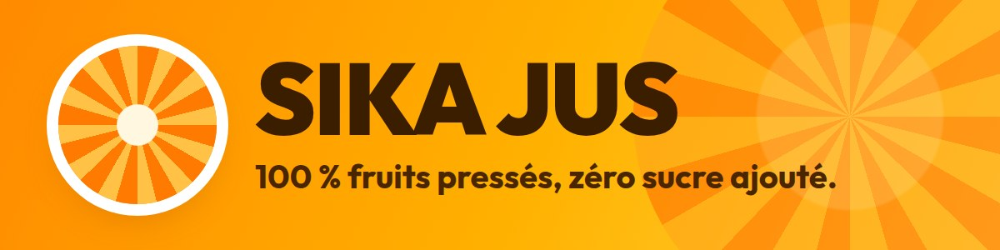
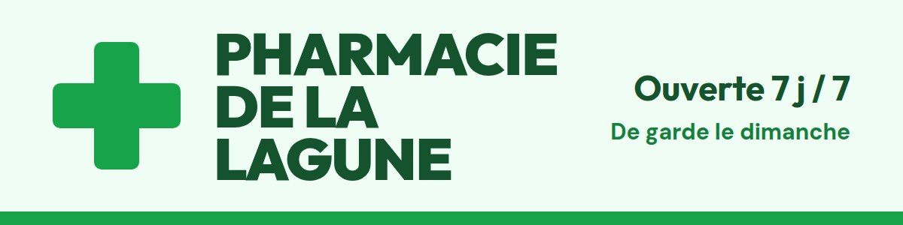
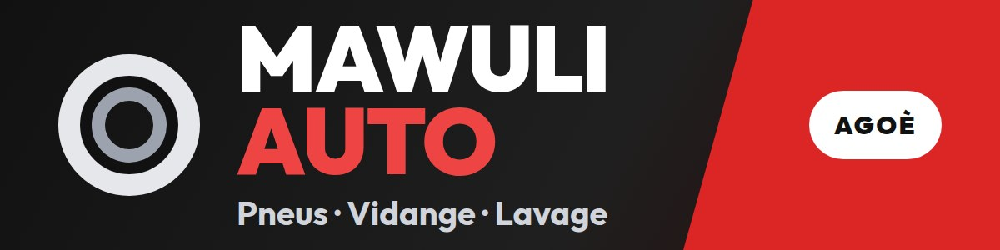

Annonceurs
Ta marque
au bord
du terrain.
Là où le foot de quartier se suit en direct.

7 emplacements
Partout où
ça joue.
Le Direct 1 / 4
La fiche du match 2 / 4
Ta compétition 3 / 4
La Tribune 4 / 4
Deux formules
Choisis
ta place
Partenairela place rien qu'à toi
- Seul à l'affiche, sans rotation
- « Présenté par » sur ta compétition
Annonceune place partagée


- Ta bannière en rotation
- Un prix plus doux
Ton visuel : une bannière 1200 × 300, ou ton logo.
Tes résultats
Chaque vue
est comptée
Une vue ne compte que si ta marque est vraiment à l'écran.
Sika JusTon bilan de campagne
Exemple
Vues
0
Clics vers ton site
0
Taux de clic
0 %
Le foot de quartier,
ta vitrine.
Deviens partenaire
koppafoot.com